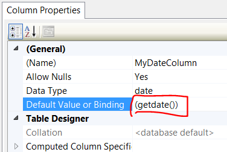

Add default value of datetime field in SQL Server to a timestamp
I've got a table that collects forms submitted from our website, but for some reason, when they created the table, they didn't put a timestamp in the table. I want it to enter the exact date and time that the record was entered.
I know it's in there somewhere, but I can't seem to find how to set the
default value (like in Access, you use getNow() or Now()) but I don't know
where to put it.
Answer
For modifying an existing column in an existing table:
ALTER TABLE YourTable ADD CONSTRAINT DF_YourTable DEFAULT GETDATE() FOR YourColumn
Suggest
This can also be done through the SSMS GUI.
- Put your table in design view (Right click on table in object explorer-> Design )
- Add a column to the table (or click on the column you want to update if it already exists)
- In Column Properties, enter
(getdate())in Default Value or Binding field as pictured below
